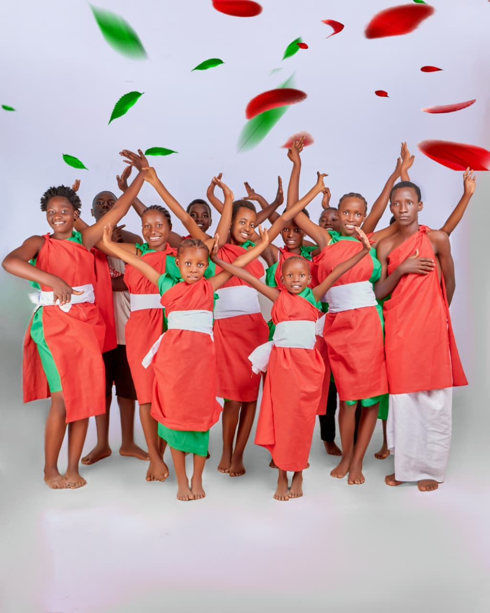
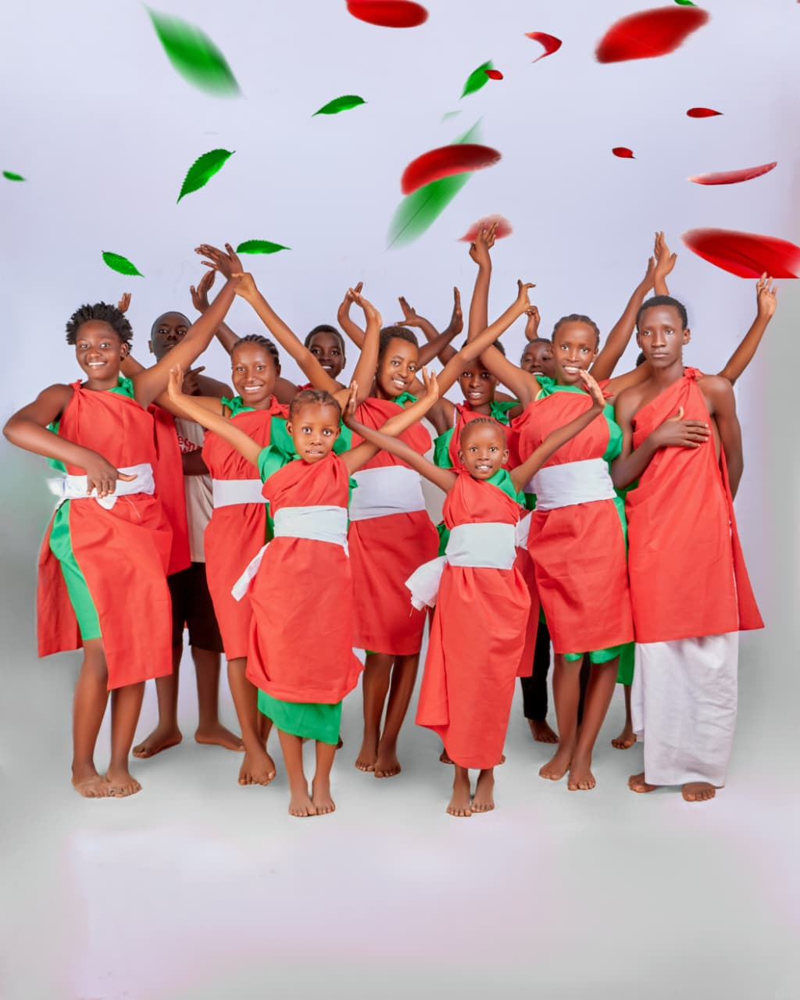
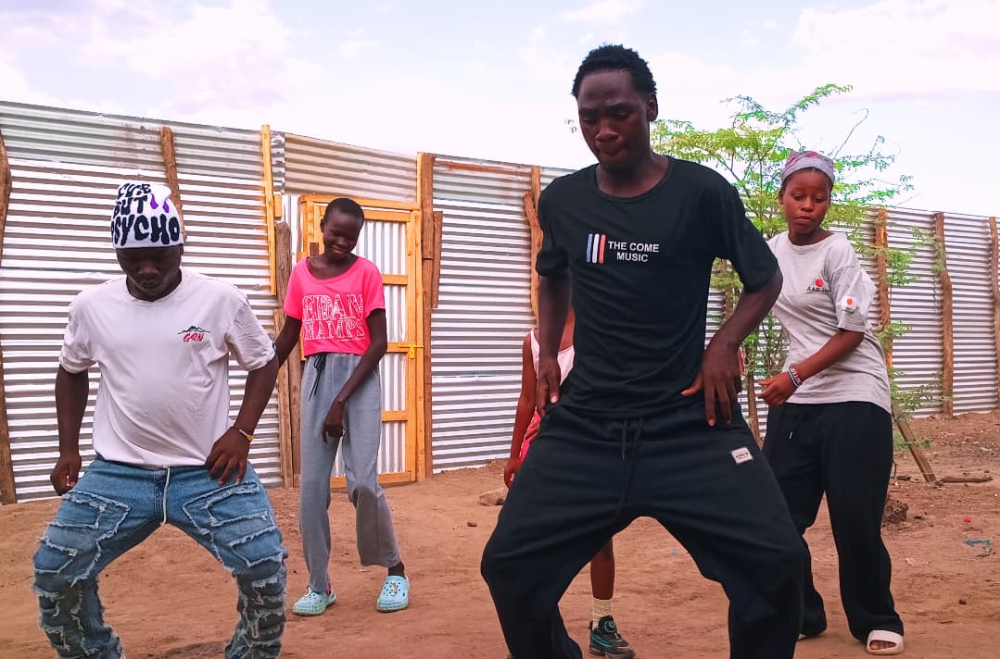
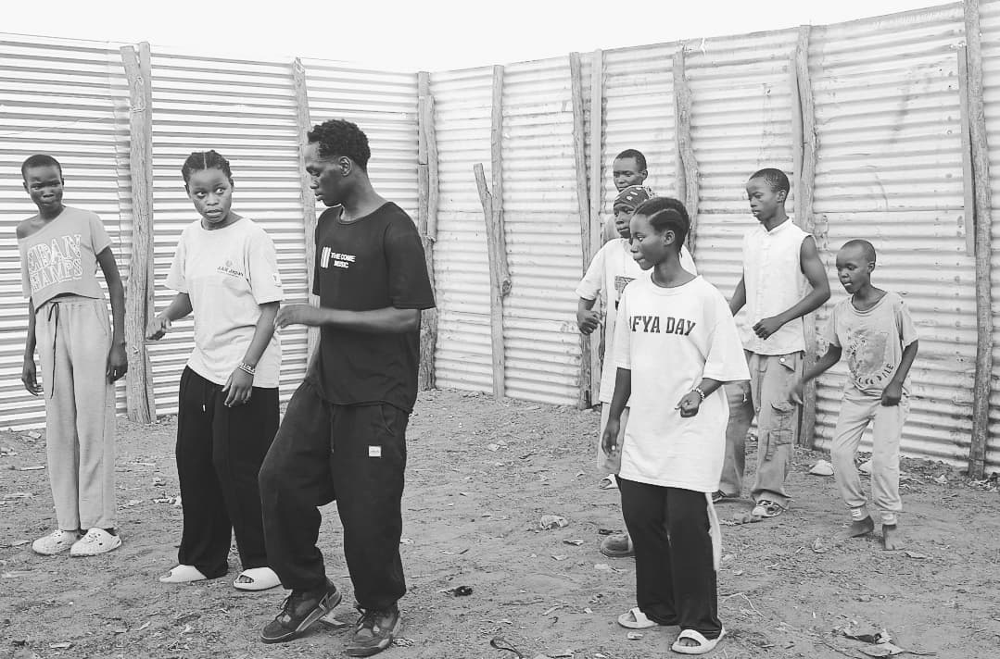
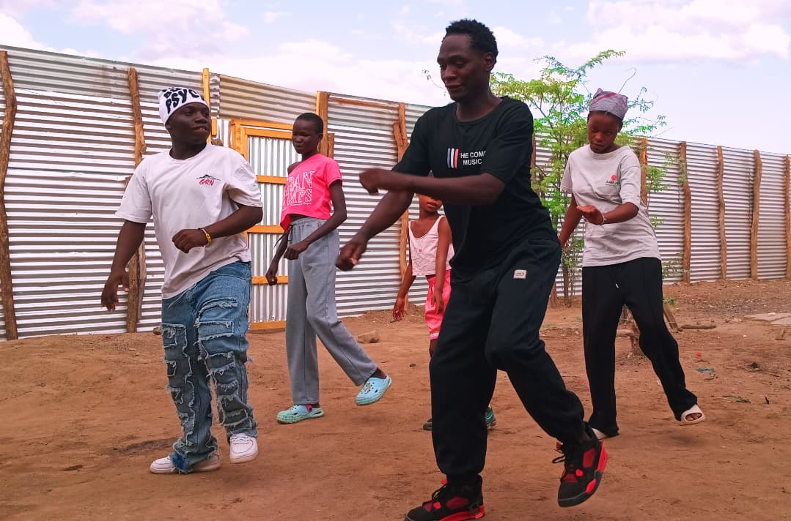

Journalism for creative arts
Our program for journalism focus on young highschoolers aspiring to become journalist in the future. This is short program that trains the journalists on various skills including how to look for and gather information, how to evaluate the source, validate them and how to tell very interesting and appealing stories.
Cultural dance for creative arts
Welcome to our cultural dances. Here we bring together creativity from different communities and celebrate our unique cultures. This one of the most activities that reminds every refugee that we have common goals which is unity and peace.


 

Shakers dance for creative arts
Welcome to the world of shakers move. Here we bring together kids who are talented in dancing different type of music including the blues, RnB, HipHop and Amapiano and Bongo fleva music without leaving behind the Afrobeat music
  